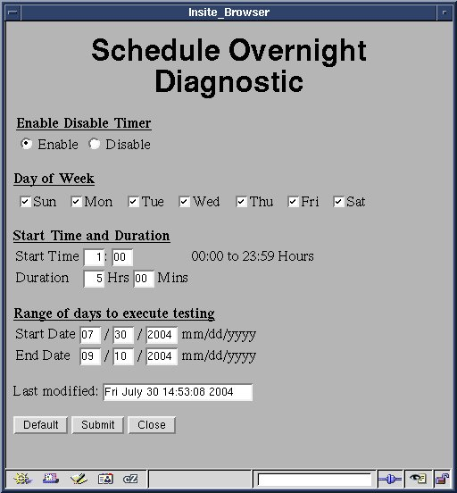

Operating Documentation
Direction 5440001-3, Rev# 6
Signa HDxt Service Methods
Module Version 2.0, Version Date 6/18/09
Operating Documentation |
| Required Persons | Preliminary Reqs | Procedure | Finalization |
|---|---|---|---|
| 1 | Not Applicable | 2 mins | Not Applicable |
The following Pass/Fail tests will be performed whenever Overnight Diagnostics are run.
Grad Hammer
Grad ECC Verification
Grad Frame/Clk
Dig Tune Brd
Multi Coil
SCP->CAN DP
MDS Link Test
Power Monitor
RF Amp
Spectro RF Amp I/F
RF Amp Interface
Spectro RF Amp
SRI EEPROM Test
SRI Enc. Test
SRI PWM Test
SRI Ram Test
SRI Register
SRI SCP Loop Test
TR Dynamic Dis
APS->Bridge DP
DIF BLD
Ex BLD
IRF BLD
MUX BLD
16 channel Switch Datapath Diag
RRF Calib
Ex-Rx Signal
RRF Feeder
RRF Loopback
Sys Cab Loopback Datapath Diag
Rx BLD
UTNS BLD
SWIFT Cable DP
SRF BLD
SRF->APS DP
SRF->DRF DP
SRF->IRF DP
SRF->TRF DP
TRF BLD
IRF->APS DP
IRF->IRF DRF DP
IRF-IRF I/O DP
| NOTE: | The system will automatically determine which of the above tests are available and skip any tests that do not apply. |
From CSD select Diagnostic menu, then select Overnight Diagnostics.
Fill in the necessary information on the GUI for running overnight diagnostics, then select [Submit]. See Illustration 1.
Illustration 1: Scheduling Overnight Diags Screen

Select [Close]. The overnight diagnostics will run at the appointed time.
| NOTE: | If the time entered in the Duration boxes is shorter than the time required to run all the Overnight Diagnostics, the system will automatically abort the current test at the appointed time and none of the other tests will be performed. |
No finalization steps.